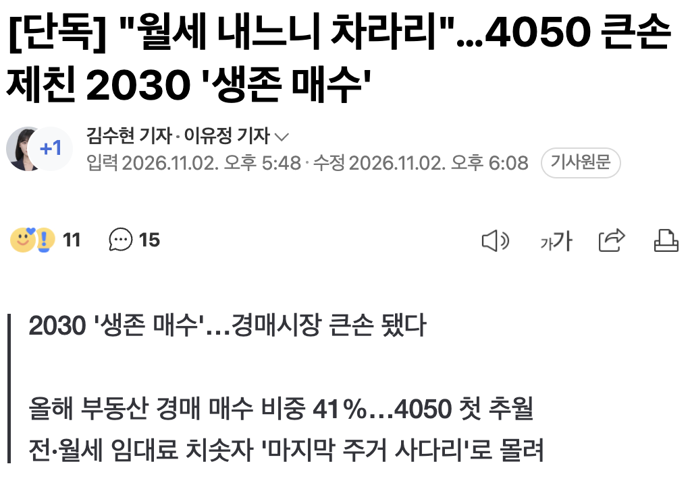
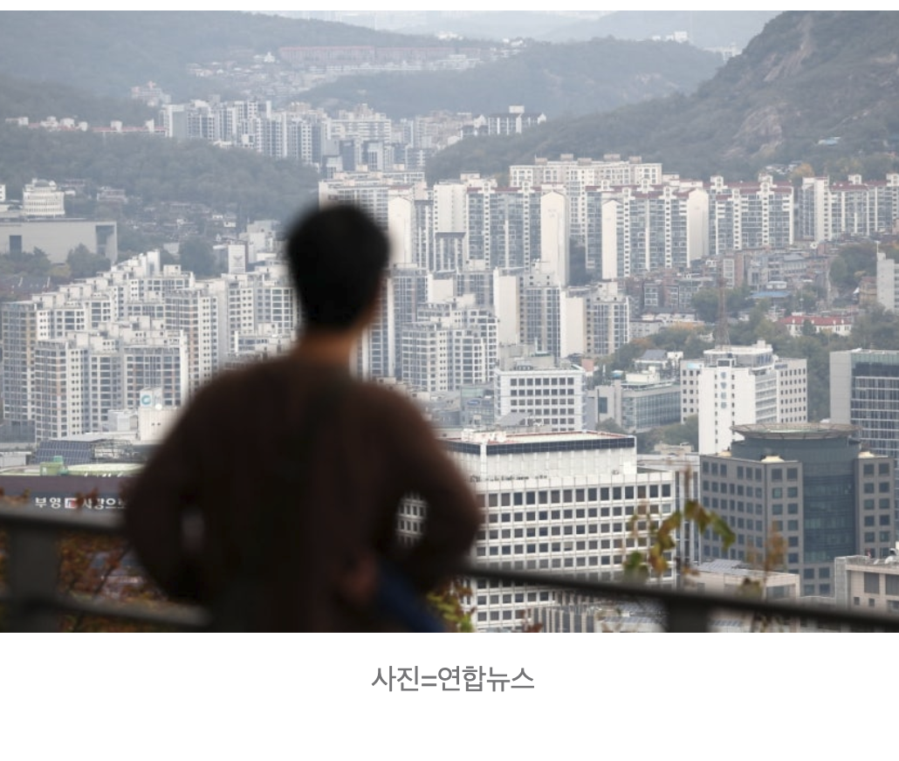
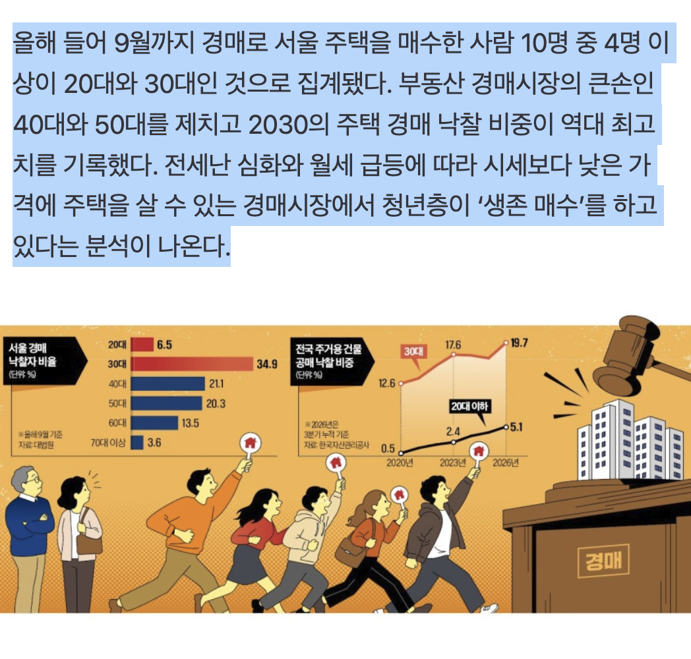
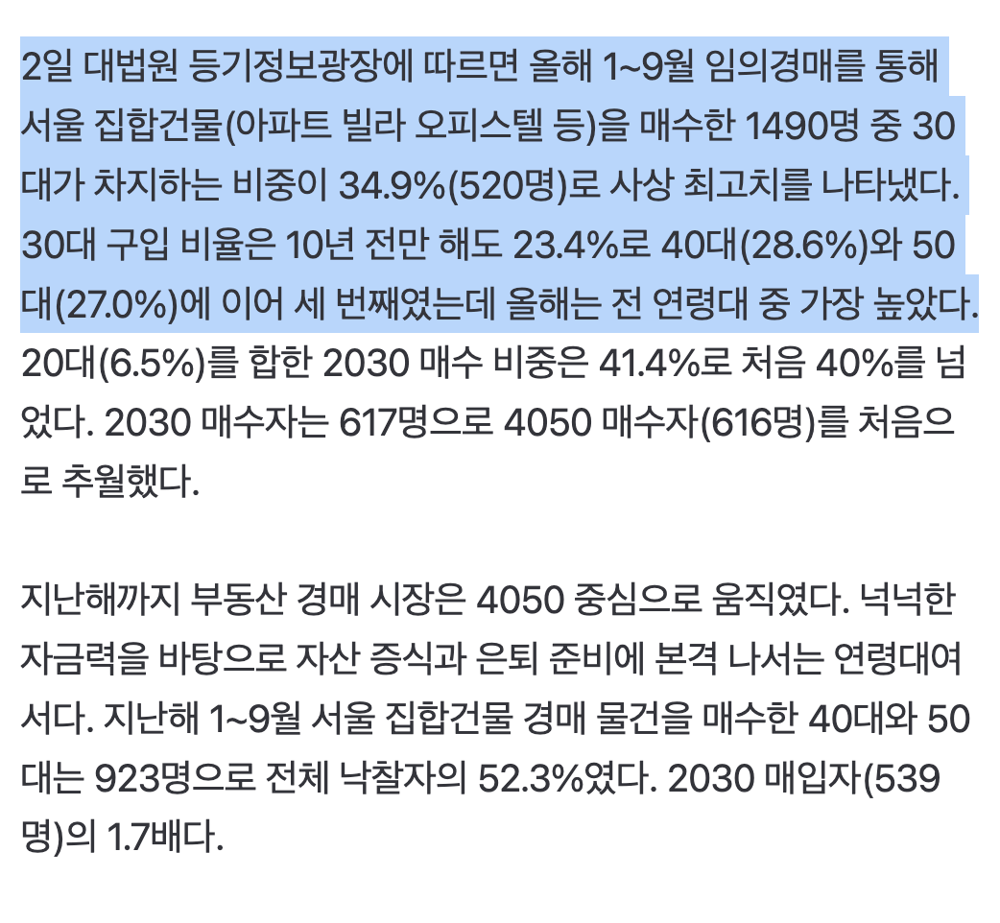
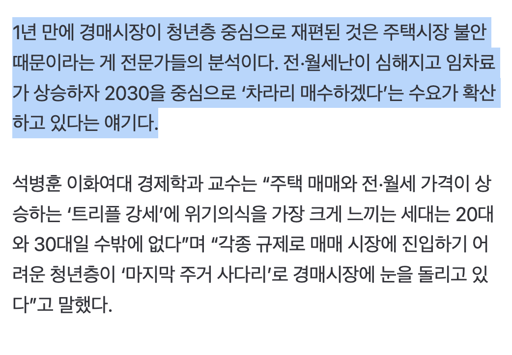

https://n.news.naver.com/article/015/0005349349?cds=news_media_pc
2030이 부동산 경매 시장의 큰손이 되었다고 함





https://n.news.naver.com/article/015/0005349349?cds=news_media_pc
2030이 부동산 경매 시장의 큰손이 되었다고 함
월 100은 덜 낸다고했는데 만약 그 집의 집값을 은행에 안전하게 이자받아먹었을때 이익하고 아니면 채권이나 배당주 했을때 이익 + 집 가졌을때 세금 , 만약 사업하면 지역보험료,국민연금 존나게 나옴.(재산이 많을수록) 이거하면 거의 또이또이하거나 걍 월세가 나음. 그리고 집은 금리 올라갈때 사는거 아니지.
국장 씹창 초기 분위기랑 뭔가 비슷해서 개무섭네..
설거지 시그널이지 사실상
나도 저 생각에 올7월에 사려고 박박긁어모으다가 리모델링할 돈도없고 결혼도 아직안해서 대출한도도 안나와서 아 조졌네하고 일단 전세2년 연장함..그리고 그 돈을 국장에 넣었어..
설거지 드개재 ㅋㅋ
집도 없는애들이 뭘 자꾸 쎄하다 그러냐 ㅋㅋㅋ
2030이 타는거면 끝물 신호임 ㅋㅋ
설거지 꺼어어ㅓ억
지금 20대가 직장에서 돈모아서 지금 시세러 서울 아파트를 살 수 있다고 생각하는 사람?? 상위 2~3프로 에 들어야 가능한 얘기 아님?
백퍼 부모빽이지
사고싶다고 어디서 끌어와서 살 금액이 아님
빌라는 그나마 이해 가능할듯
저 기사에서 말하는건 거의 빌라경매긴 함 아파트는 경매매물 거의 안나와
설거지잼...
경매는 좀 안했으면 하는게 의왕에 그 아파트 불질렀던 인간보면 뭔짓을 할지 모르는거라...
내가 저 케이스인데
월세가 집값도 오르고 월세매물 오르면서 월세 1.5배 올라감
계산기 때려보니 걍 사서 이자내는게 풀대출 받아도 월100은 덜내더라
원금상환은 적금같은거고.... 걍 등떠밀려서 삼